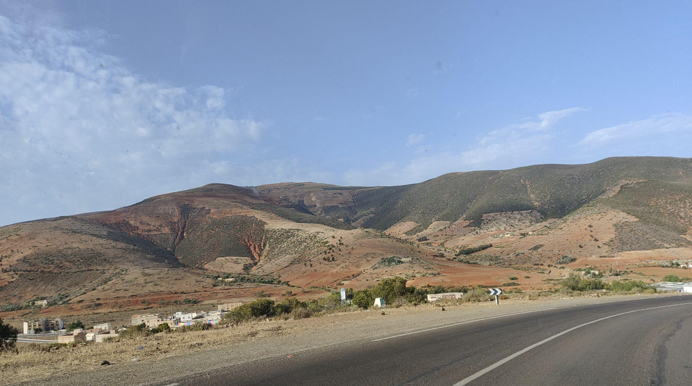

1 Curriculum vitae

Profile
Driven by a passion for challenges and a deeply rooted curiosity, my dedication to accuracy and problem-solving skills supports my pursuit of exploring and understanding complex data. I am determined to contribute to innovative solutions within analytical inquiries.
Education
| Instituut | Periode | Opleiding |
|---|---|---|
| Hogeschool Utrecht, Utrecht | 08/2021- Heden | Bachelor of Science (Bsc): Biologie en medisch laboratoriumonderzoek (Life Sciences). Specialisatie: Biomolecular Research (BMR). Minor: Data Science. Projecten: “IL-8-promotorregulatie-onderzoek met pAc-GFP1-1L8p-reporterconstruct”, “Effect foliumzuur op genexpressie MuRF-1 en Atrogin-1 in relatie tot spierafbraak” |
| Hogeschool Utrecht, Utrecht | 08/2021- 05/2022 | Propedeuse: Biologie en medisch laboratoriumonderzoek |
| MBO Rijnland VAVO, Gouda | 08/2020 - 5/2021 | VWO deelcertificaten Engels en Biologie + HAVO deelcertificaten Scheikunde en Wiskunde A |
| Hogeschool Utrecht, Utrecht | 08/2019-05/2020 | Propedeuse: Verpleegkunde |
| GSG Leo Vroman, Gouda | 08/2014-05/2019 | HAVO diploma CM profiel met Biologie |
Skills
- Microscopy - Western Blot - SDS Page - Gel Electrophoresis - Cell Culture - Bacterial Culture - Cloning Techniques using Plasmids - cDNA Synthesis - (q)PCR - Colony PCR - Spectrophotometry - Data Processing in R Studio (RNA Sequencing, Next Generation Sequencing) - Excel and JASP - ELISA - Liquid Chromatography - Transfection (Calcium Phosphate Coprecipitation Method) - Dutch - English - Eagerness to Learn - Perseverance - Adaptability - Critical Thinking
Job experience
De Hanepraij Zorgpartners Midden-Holland - Intern
- Location: Gouda
- Duration: Internship | 01/2020-05/2020
Roles and Responsibilities
- Consistently appeared on time at the workplace and remained present during working hours.
- Maintained accurate patient records.
- Collaborated professionally with colleagues.
- Effectively managed tasks and learned to work under pressure during the COVID-19 pandemic.
- Data analysis based on literature.
Hobbies
- Reading
- Painting
- Playing Guitar
- Learning Arabic
- Chess
- Traveling
- Photography
Contact
- Phone Number: +31 6 44569702
- Email: khadijazbair.zbair@student.hu.nl
- Date of Birth: 21-02-2002
- Nationality: Dutch
- Name: Khadija Zbair